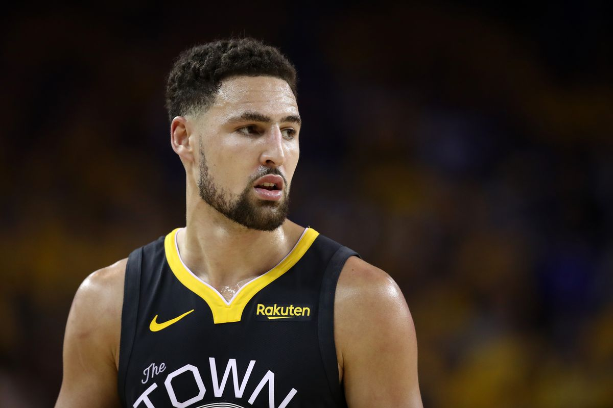
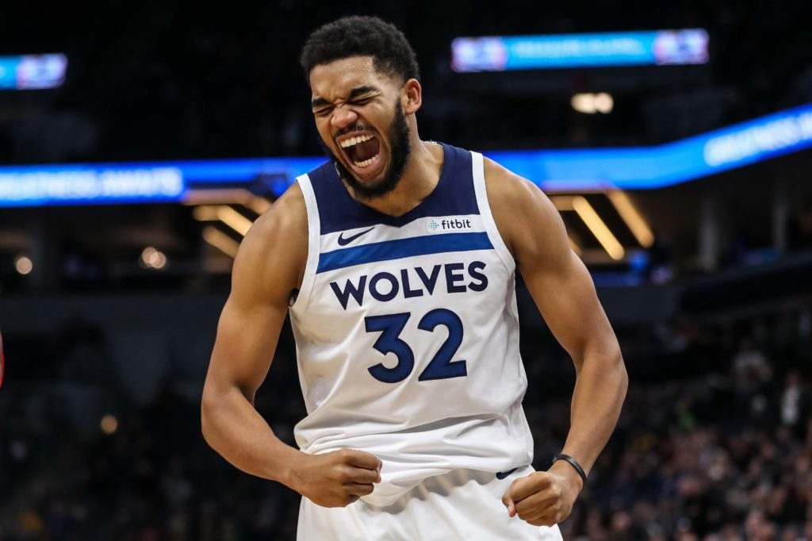
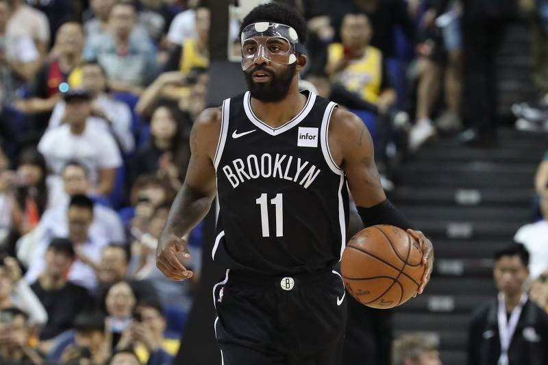
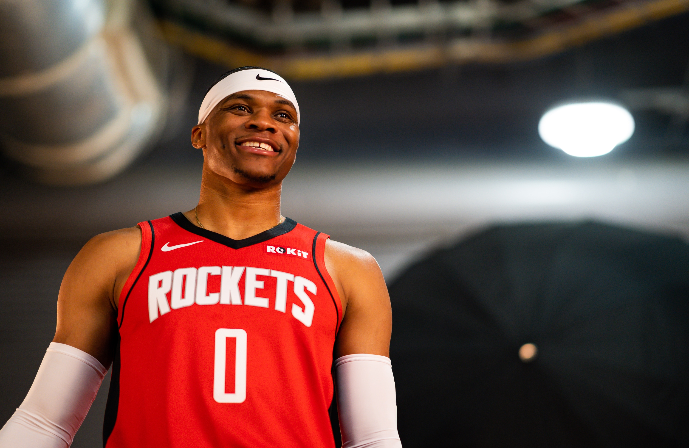
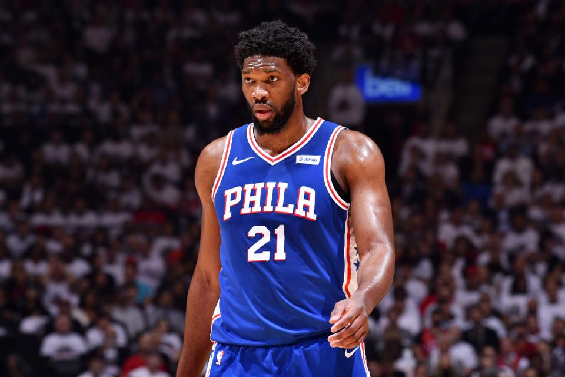

Klay Thompson is one of the greatest shooters the NBA has ever seen. Klay is a multiple time All-Star, All-NBA player, and NBA champion. Klay was selected to the All-Defensive Second Team last season and has also won the three point contest in 2016. One night in 2016, Klay had a spectacular night shooting the ball and dropped 60 points with only taking 11 dribbles! Thompson is the ultimate 3-and-D player being one of the best defending guards in the league and one of the best shooters too. In the finals last season, Klay tore his ACL and he won’t be expected to play this season. Assuming that Klay comes back as good as he was before, this number 15 spot is well deserved.
The young center has already proven himself to be one of the best big men in the league. At 23 years of age KAT has already made two All-Star teams and one All-NBA selection. Towns has the most complete offensive game for any big man in the league as he averaged 24.4 PPG, 12.4 RPG, and 3.4 APG, while shooting 51.8 from the field and 40% from three point range. The next step Towns needs to take, is to become a better defender. Last year, the Wolves ranked 24th in defense and the year before, ranked 25th. The Wolves will probably not make the playoffs this season, due to a loaded west, but if Towns can lead them to it, that will prove himself to be a superstar tier player.
Kyrie is one of the best point-guards in the NBA, as he is a 6x All-Star, multiple time All-NBA player, and also an NBA champion. Kyrie has one of the finest lay-up packages in the NBA and is also one of the best ball handlers of all-time. One big question about Kyrie, is his leadership. The main reason Kyrie left Cleveland in 2017 is so that he could lead his own team and not be stuck in the shadow of LeBron James, but over the two years in Boston, Irving couldn’t prove that he could lead a team to contend for a championship and is much better as a second option. Next year, when Durant returns from his injury, the Nets will be a big problem in the east and could potentially make a finals appearance.
Westbrook is one of the NBA’s most electrifying players, due to his hard drives to the basket and then finishing with a powerful dunk or lay-up. The former MVP is currently on a three season streak of averaging a triple double (two digit numbers in three major statistical categories). Westbrook has plenty of achievements and awards under his belt, such as, all-star appearances, All-NBA Teams, and even a KIA Most Valuable Player award. This year, Westbrook will be suiting up for the Houston Rockets, playing alongside James Harden. A lot of critics say that this Rockets duo won’t work because both Westbrook and Harden are ball-dominant guards, so they will have to prove them wrong this season.
The Sixers center is the second best center in the NBA, arguably the best. Last season, Embiid had the 4th highest points per game with 27.5. He also had the second highest rebounds per game with 13.6. Embiid is the most dominant center in the league, having all those points and rebounds to his name and also being an elite defender. Last year in the playoffs, Embiid was close to leading the Sixers to the conference finals, but eventually fell short due to the historic shot made by Kawhi Leonard. This season, the Sixers and the Bucks will have to fight for the Eastern Conference, and that will require Joel Embiid to lead the charge.
